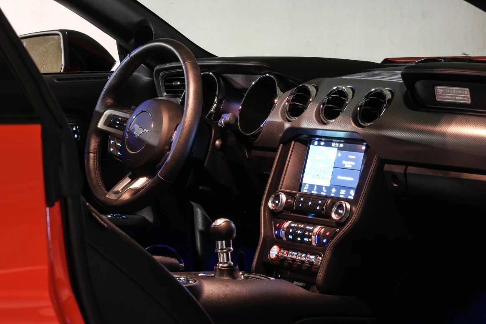

Ford Mustang GT
Introduction
The Ford Mustang is a series of American automobiles manufactured by Ford. In continuous production since 1964, the Mustang is currently the longest-produced Ford car nameplate. Currently in its seventh generation, it is the fifth-best selling Ford car nameplate. The namesake of the "pony car" automobile segment, the Mustang was developed as a highly styled line of sporty coupes and convertibles derived from existing model lines, initially distinguished by "long hood, short deck" proportions.
Saying So Long to Summer 2020: A Short Sojourn in the Sensational Ford Mustang GT
Of all the great sports cars that have held court in the Carpages Garage- and there have been many- the Ford Mustang enjoys the distinction of being the most frequent visitor. Since 2014, we have dutifully tested all gestations of the Mustang species spanning two generations. We have flogged everything from the knuckle dragging GT500 with 662 horsepower to the 4-cylinder Ecoboost model with an automatic gearbox and everything in between. The GT350 was the most memorable strain of Mustang we’ve sampled, leaving an indelible mark that still persists today. If you want to know which model is the most well rounded, the sweet spot of the lineup if you will; without hesitation, it’s the GT.
With 5.0 badges mounted conspicuously on the front fenders and a gloriously all-American soundtrack coming out of the dual exhausts, the GT is sort of the Goldilocks of the lineup. Yes, the aforementioned GT350 and new GT500 steal all the headlines and the Ecoboost models, while impressive, still don’t quite provide the quintessential Mustang experience. The debate will rage on between those in inline-four and V8 camps, but trust us, you want the V8. And you want your V8 attached to the 6-speed manual gearbox which is just how our tester you see here came equipped.
When the current S550 generation dropped back in 2015, we were smitten. For the 50th anniversary, Ford gave the designers a lot of runway for how the new car would look and they nailed the modern/retro balance perfectly. The interior was a big step up from before, and finally, there was an independent rear suspension on the menu which promised the Mustang would now be an adroit handler instead of being competent only in a straight line. Nowadays, the most liked car on Facebook boasts four season usability, comfort on longer trips and the kind of speed and handling you would expect of a bonafide sports car, not just a for a pony car.
This year was a challenging one for obvious reasons. After spending untold hours climbing the walls, we wanted to embrace the summer season as much as possible. For us, that meant devising a schedule of cars to spend some time in the Carpages Garage as usual, but this time there was a definite emphasis on stuff that’s fun. Looking at the posts we’ve made over the last several weeks you would have to agree. But to round out the season and to properly say so long to summer we knew what had to be the car in our care over the Labor Day long weekend- It would have to be the Mustang GT, and it would have to have a V8 and a stick.
Our Race Red tester riding on 5-star 19” wheels fit the bill rather nicely. Speaking of bills, the sticker price for our ‘Stang rang up at a hefty $66,175 and included some stuff we would probably pass on, like the comfortable but not heated or cooled Recaro bucket seats. The perfect GT model is one that has the basic performance options and nothing else, so you it’s fully possible to put one in your driveway for much less scratch.
So now we had the car, but no destination. Luckily, a fortuitous scan of cottage country rentals yielded a wonderful place on Lake Simcoe in the bustling metropolis of Ramara Township and we wasted no time pulling the trigger on a reservation. With wives and kids and enough stuff to last a few months packed snugly in the minivan, we loaded the Mustang up with some essentials, leaving enough room for some fresh roadside Ontario-grown produce and headed north.
As anyone who has ever tried heading north of the city on a long weekend knows, traffic is always annoyingly slow. That was the case this time around too, proving that many other families who’ve likely felt cooped up over the last several months had a similar idea. The drive, which should have taken 90 minutes, took double that. Luckily, the manual transmission on our tester is rather easy to manipulate in gridlock and we discovered two likely unnoticed details to most; it has a hill holder feature as well as anti-stall technology which seems to work rather well. The A/C serves up a cool breeze and the stereo pumps out the tunes reasonably well. The Recaros won’t cool you keister but they are surprisingly comfortable. Traffic jams suck to be sure, but this one wasn’t so bad.
We awoke the next day to glorious summer weather and decided to take a day trip exploring some of the local small hamlets and towns. Those in the minivan took the shortest route, but we made sure the Mustang would be on roads which favored corners and squiggly line signs rather than arrow straight rural concessions. Our first destination was a Farmer’s Market in Brechin, Ontario. After stocking up on a ton of treats including sublime butter tarts and a back bacon sandwich that would rival the best anywhere, we headed towards Orillia to spend the rest of the afternoon meandering around downtown and nearby waterfront parks. The roads in the town’s core are narrow and heavily trafficked which caused us to slow our pace considerably. But that gave our Mustang the chance to trade high speed commuting for low speed cruising. For this, we obviously selected Track mode for the exhaust sound with is the loudest setting possible (Quiet Mode, which our neighbors might appreciate, is the unsurprisingly the quietest.) We weren’t surprised that it turned heads, but we were a bit puzzled when people started whipping out their phones to snap a pic. It would appear that the Mustang has truly earned the most liked car on the Facebook after all.
After a delicious dinner courtesy of Theo’s Restaurant eaten on the placid shores of Lake Couchiching, it was time to head back to home base. We hopped in the Mustang and decided that the incredible sunset that was about to unfold would be best taken in from the driver’s seat as we slithered our way around some local bits on sinewy tarmac. Here, the Mustang was truly in its element. We would keep the throttle pinned as long as possible, reveling the Coyote V8’s soundtrack which sounds downright intoxicating as you approach the 7,500 rpm redline. You’ll want to keep Exhaust Mode in Track to really appreciate the noise this thing is capable of making. As we approach a bend, we crack off two perfectly executed heel-and-toe downshifts- the car does have a great rev-match feature but we pooh-pooed it in favor of our supreme driving skills- and then it was a firm application of the brakes, the pedal offering excellent feel and modulation and which never came even close to fading no matter how much we pounded ‘em. Establishing a rhythm from corner to corner became constantly easier with the suspension taking a set and biting hard to keep the Mustang on its intended line. We wished for more feedback from the steering rack, but we found it hard to complain because it was just so darn easy to place the Mustang exactly where you want it.
The GT’s demeanor is very adjustable- thumb the button on that steering wheel with the familiar pony crest and you can customize to your heart’s desire. We found that it really didn’t matter which mode or combo you selected, the experience was only marginally different. Here’s how we did it- for shorter trips, or for mindless commuting and when we felt like playing it was Track Mode all the way- it seemed to give the Mustang its pointiest behavior and it made the car feel alert and ready for whatever we had in store. You should also know that this car would feel just as at home at a track day as it would running to pick up takeout for dinner.
As the Labor Day long weekend drew to a close, it was time to fill the Mustang’s meager trunk and rear seats with some of our gear and head for home. We made some good memories, and the Mustang is surely a focal point for some. We took some genuinely great pictures of the kids posing by this mean machine, wearing more of the ice cream rather than eating it, drawing admiring crowds at the water’s edge. Our favorite memory? Blasting down an empty concession road, windows down, sun kissing the horizon while the Coyote howled its scintillating bawl.
And that’s the thing about this car- it feels like an anachronism but in the best possible way. How bright is the future for a large naturally aspirated V8 powering a sports coupe? For how much time will be able to enjoy automotive experiences such as this? Perhaps for a limited time, but Ford has emphatically maintained that despite abandoning sedans the Mustang will always be a part of its lineup. We hope that that promise is iron clad.
Interior
2020 Ford Mustang GT- Specifications
- Price as tested:55,00,568.57 lacs
- Body Type: 2-door, 2+2 passenger coupe
- Powertrain Layout: Front engine/rear-wheel drive
- Engine: 5.0-litre V8, DOHC, 32 valves
- Horsepower: 460 @ 7,500 rpm
- Torque (lb-ft.): 420 @ 4,600 rpm
- Transmission: 6-speed manual
- Curb weight, manual transmission: 1,681 kg (3,705 lbs)
- Observed Fuel Consumption: 13.4L/100 km (18 mpg)